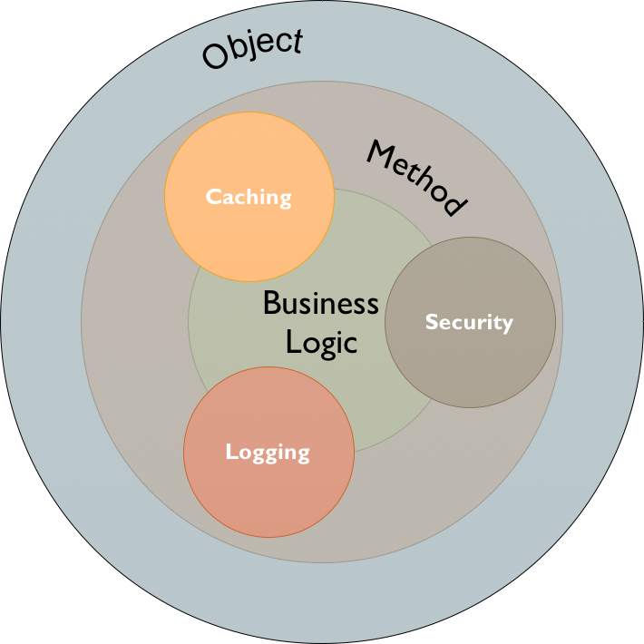
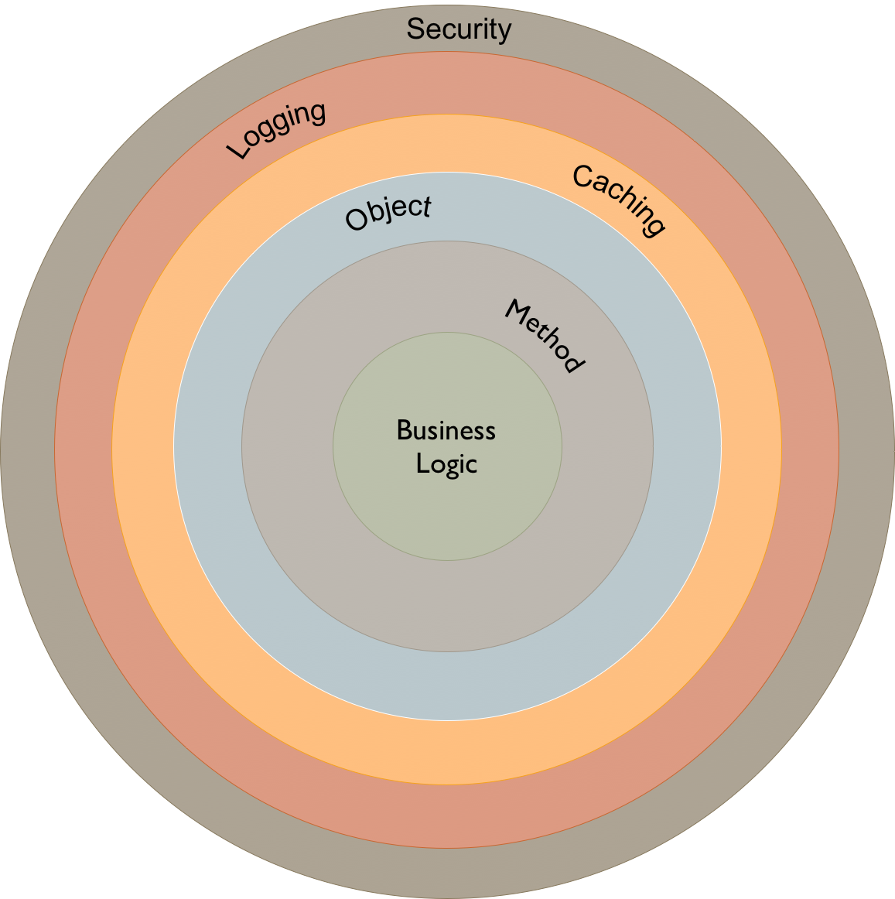
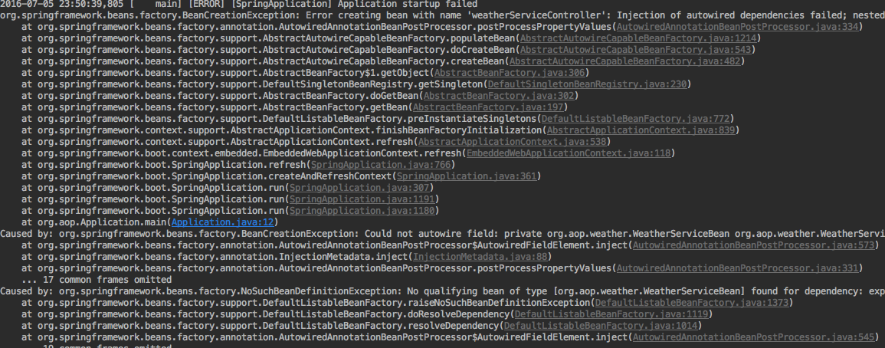
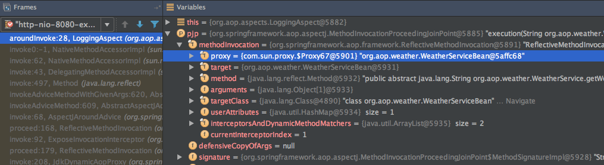
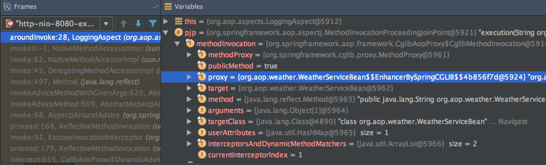
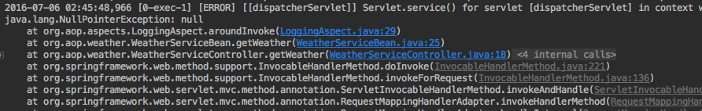
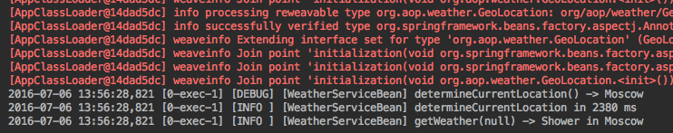
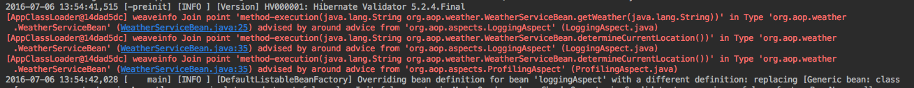
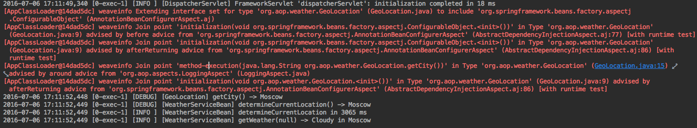

Spring AOP
Aspect-oriented programming with Spring
Created by Alexander Valyugin / @zeddius1983Table of Contents
- Why Aspect-Oriented Programming?
- Basic AOP Concepts
- Getting Started with Spring AOP
- Unleashing the Power of AspectJ
- Summary
What is AOP?
is a programming paradigm
aims to increase modularity by allowing the separation of cross-cutting concerns
Cross-cutting Concerns
are aspects of a program that affect other concerns
OOP implementation
AOP implementation
AOP Concepts
Aspect: a modularization of a concern that cuts across multiple classes
Join point: a point during the execution of a program
Advice: action taken by an aspect at a particular join point
Pointcut: a predicate that matches join points
Declaring an aspect
@Aspect
public class LoggingAspect {
}
Declaring a pointcut
@Aspect
public class LoggingAspect {
@Pointcut("execution(* *(..)) && @annotation(log)")
private void logAnnotatedMethod(Log log) { }
}
@Target({ ElementType.METHOD, ElementType.TYPE })
@Retention(RetentionPolicy.RUNTIME)
public @interface Log
enum Level {
TRACE, DEBUG, INFO, WARN, ERROR
}
Level level() default Level.INFO;
}
Best Practices
- Use @target (@within) and @annotation pointcuts wherever possible
- Otherwise try to keep pointcuts fine grained
Declaring advice
@Aspect
@Component
public class LoggingAspect {
@Autowired // DI works out of the box
private TraceBuilder traceBuilder;
@Pointcut("execution(* *(..)) && @annotation(log)")
private void logAnnotatedMethod(Log log) { )
@Around("logAnnotatedMethod(log)")
public Object aroundInvoke(ProceedingJoinPoint pjp, Log log)
throws Throwable {
...
}
}
Do something useful
@Around("logAnnotatedMethod(log)")
public Object aroundInvoke(ProceedingJoinPoint pjp, Log log)
throws Throwable {
Logger logger = LoggerFactory.getLogger(pjp.getTarget().getClass());
String traceLog = traceBuilder.build(pjp);
Object result;
try {
result = pjp.proceed();
log(logger, log.level(), traceLog, result);
return result;
} catch (Exception e) {
logger.error("{} -> threw {}", traceLog, e.getClass().getName());
throw e;
}
}
Enabling AspectJ Support
@Configuration
@EnableAspectJAutoProxy(proxyTargetClass = true)
public class AppConfig {
}
<aop:aspectj-autoproxy proxy-target-class="true"/>
Weather forecast service
public interface WeatherService {
String getWeather(String location);
}
@Service
public class WeatherServiceBean implements WeatherService {
@Override @Log
public String getWeather(String location) {
// return the most accurate weather (ever)
}
}
@RestController
public class WeatherServiceController {
@Autowired
private WeatherServiceBean weatherService;
@RequestMapping("/weather")
public String getWeather(@RequestParam(required = false)
String location) throws IOException
return weatherService.getWeather(location);
}
}
Run to see...
it doesn't work
Here comes the fix
@RestController
public class WeatherServiceController {
@Autowired
private WeatherService weatherService;
...
}
Voila
curl localhost:8080/weather?location=Moscow

Understanding AOP proxies


JDK Dynamic Proxy
If the target object to be proxied implements at least one interface then a JDK dynamic proxy will be used
CGLIB Proxy
If the target object does not implement any interfaces then a CGLIB proxy will be created
Let's move on...
@Service
public class WeatherServiceBean implements WeatherService {
@Override @Log
public String getWeather(String location) {
if (location == null) try {
location = determineCurrentLocation();
}
...
}
@Log(level = Log.Level.DEBUG)
public String determineCurrentLocation() throws IOException {
...
}
}
Boromir is right...
... yes because of the proxy mechanism!
It means that self-invocation is going to be invoked against the 'this' reference, and not the proxy.
Therefore advice is not executed.
It's time to unleash the full power of AspectJ...
Load-time Weaving
Load-time weaving (LTW) refers to the process of weaving AspectJ aspects into an application’s class files as they are being loaded into the Java virtual machine (JVM).
Enabling Load-time Weaving
add JVM arguments first
-javaagent:path/to/aspectjweaver-{version}.jar
-javaagent:path/to/org.springframework.instrument-{version}.jar
add META-INF/aop.xml to classpath
<!DOCTYPE aspectj PUBLIC "-//AspectJ//DTD//EN"
"http://www.eclipse.org/aspectj/dtd/aspectj.dtd">
<aspectj>
<weaver options="-verbose -showWeaveInfo">
<include within="org.aop..*"/>
</weaver>
<aspects>
<aspect name="org.aop.aspects.LoggingAspect"/>
</aspects>
</aspectj>
and finally
@Configuration
@EnableLoadTimeWeaving(aspectjWeaving =
EnableLoadTimeWeaving.AspectJWeaving.ENABLED)
public class AppConfig {
}
<context:load-time-weaver aspectj-weaving="on"/>
Looks pretty simple, let's try
(hope Boromir is not there this time)
Oh not again...

Seems like TraceBuilder is not injected

@Aspect
@Component
public class LoggingAspect {
@Autowired
private TraceBuilder traceBuilder;
@Around("logAnnotatedMethod(log)")
public Object aroundInvoke(ProceedingJoinPoint pjp, Log log)
throws Throwable {
...
String traceLog = traceBuilder.build(pjp); // <- line 29
...
}
}
Hopefully there is a fix for it...
by making it Spring bean again
@Configuration
@EnableLoadTimeWeaving(aspectjWeaving =
EnableLoadTimeWeaving.AspectJWeaving.ENABLED)
public class AppConfig {
@Bean
public LoggingAspect loggingAspect() {
return Aspects.aspectOf(LoggingAspect.class);
}
}
Works like a charm!
You can see the aspects weaved in due to -showWeaveInfo
One More Thing...
@Configurable
The support is intended to be used for objects created outside of the control of any container
@JsonIgnoreProperties(ignoreUnknown = true)
@Configurable
public class GeoLocation {
private String city;
@Log(level = Log.Level.DEBUG)
public String getCity() {
return city;
}
}
in WeatherServiceBean
@Log(level = Log.Level.DEBUG)
private String determineCurrentLocation()
throws IOException {
...
return geoLocation.getCity();
}
No surprises here :-)
The sample project available on github
Summary
One can show presentation without the cats...
but not without Boromir